Introduction and Objectives
This section of the website will discuss a short introduction to the study and the objectives of the study.
Introduction
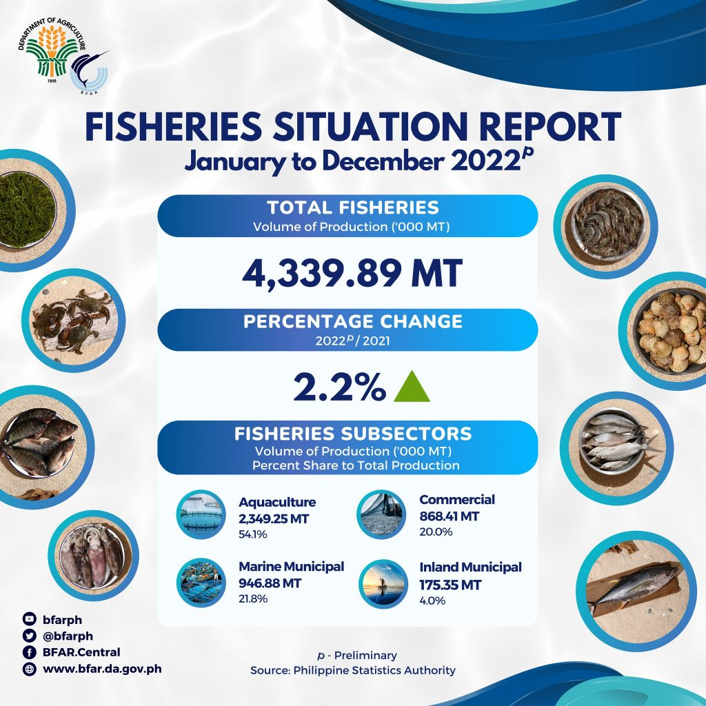Fish provides several benefits to both humans and the environment. They gave food and economic assistance while also diversifying aquatic systems. Precise assessment of fish freshness is important to consumers. However, manual analysis takes time and sometimes leads to false assessment, especially when the consumer needs more experience, which results in parasitic diseases. Those affected by such errors are the fishermen, fish industry actors, seafood exporters, and consumers.
Data from Bureau of Fisheries and Agriculture says that in the Philippines, the fish production volume grew by 2.2% in 2022, totaling 4.3 million megatons. This growth is shared by various fisheries subsectors, with the biggest share garnered by the aquaculture sector (54.1%), the marine municipality (21.8%), and the commercial fisheries (20.0%)
To address these issues sevaral scholars have used technology, such as the Fish Freshness Detector model that uses fuzzy logic and fish samples to classify freshness of the fish by Abd.Aziz and fellow researchers. Another example of scholars using technology to combat this issue is the use of algorithms like Tiny YOLOv2 which was used to detect the freshness level of three different fish species, which was utilized by Anas and their colleagues.
Objectives of the Study
This study focuses on using MobileNetV1 to classify the freshness of fish using fish eye images, specifically this study aims to:
- Determine the accuracy of the models in classifying fish eye freshness
- Determine the significant difference in the accuracy of MobileNetV1 when data is grouped according to augmented or non-augmented
- Compare the accuracy of MobileNetV1 when dataset is grouped according to fish species.
Research Design and Dataset
This section of the website will discuss on the Research Design and the Dataset used by the proponents
Research Design
The study used an experimental research design. According to Berndtsson (2008), in computer and information sciences, experiments are often done by implementing a machine learning model and running simulations to see how the model is affected by relevant variables. The experiments allowed the researchers to focus on investigating some variables, including its effects on the model. After the experiments, the researchers had comprehensively described and interpreted the result of the model for classifying fish eye freshness using MobileNetV1.
Fish Eye Freshness Dataset
This study used the Freshness of the Fish Eyes (FFE) dataset (Prasetyo et al., 2022). The dataset was used for classifying the freshness of fish based on eye images. There are eight species of fish; each species consists of images that are categorized into highly fresh, fresh, and not fresh. This study will use an augmented FFE dataset and a non augmented FFE dataset.
Augmented Dataset
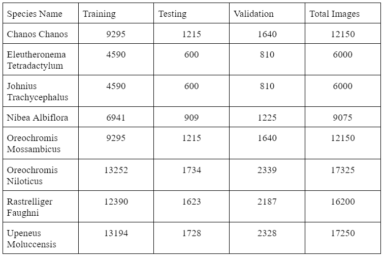The augmentations include random vertical flip, random horizontal flip, random rotations, zoom range and shear range. The datasets follow a 75/10/15 split for both the augmented and non-augmented datasets. 75% of the dataset has been used to train the model, 10% has been used for testing, and 15% has been used for validation. Both dataset were divided into three classes: training, testing, and validation. Amongst the eight species, only six are local to the Philippines. However, the experiment included the non-native species.
The non augmented dataset is shown on the next table and the augmented dataset is shown on the table after.
Non Augmented Dataset
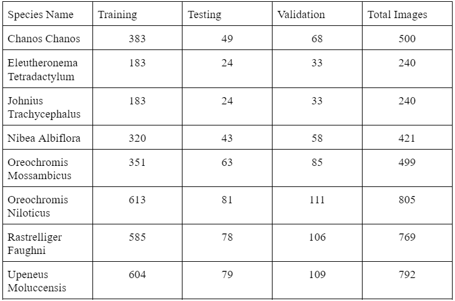Results and Discussions
This section of the website will discuss the solutions to the objectives of the study, interpretation of the results, and limitation of the models. The learning rate and batch were set at 0.001 and 16, and were trained using 50 epochs.
First Objective: Determine the accuracy of the models in classifying fish eye freshness
After conducting the experiment it was arrived that MobileNetv1 is most effective when the dataset is augmented, having garnered accuracies as high as 92.19% for the Nibea Albiflora species and the lowest accuracy being 81.33% for the Eleutheronema Tetradactylum. The mean accuracy rate is 88.54%, which reveals that MobileNetV1 is generally useful when classifying fish freshness through fish-eye images. The table below shows the distribution of the total number of fish-eye images, number of correctly classified images, and the accuracy rate of the model.
Accuracy of MobileNetV1 in Classifying Fish Eye Freshness with Augmented Dataset
On the other hand, the non-augmented dataset’s highest accuracy being 71.43% from the Oreochromis Mossambicus species and a mean accuracy of 56.75% shows that the non-augmented dataset is not effective on classifying the freshness of fish through fish-eye images. The next table shows the distribution of the total number of fish-eye images, number of correctly classified images, and the accuracy rate of the model. An article written by Randall Hendricks from the company Deepchecks stated that industry standards are between 70% and 90%. Anything more than 70% is considered valuable and a realistic model data output, since the data from a model can be used to create applications that are used to meet the needs of different businesses and sectors, it is crucial that the data output of the model be realistic. (Randall, 2024)
Accuracy of MobileNetV1 in Classifying Fish Eye Freshness with Non-Augmented Dataset
Second Objective: Determine the significant difference in the accuracy of MobileNetV1 when dataset is grouped according to augmented and non-augmented
Chi Square was used to assess the significant difference in the accuracy of MobileNetV1 when datasets are grouped according to augmented and non-augmented. The table below contains the summary of the data that was used to conduct the Chi Square. After conducting the test it gave the proponents a p-value of 0.512, which is much greater than the significance level of 0.05. This strongly suggests that the observed difference in the accuracy of MobileNetV1 in classifying fish eye freshness between augmented and non-augmented data is not statistically significant.
Observed Frequencies
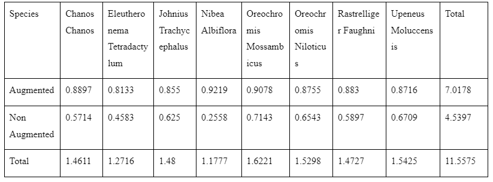Expected Frequencies
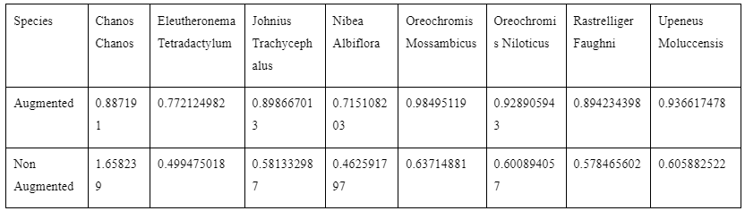(Observed Value - Expected Value)² / Expected Value
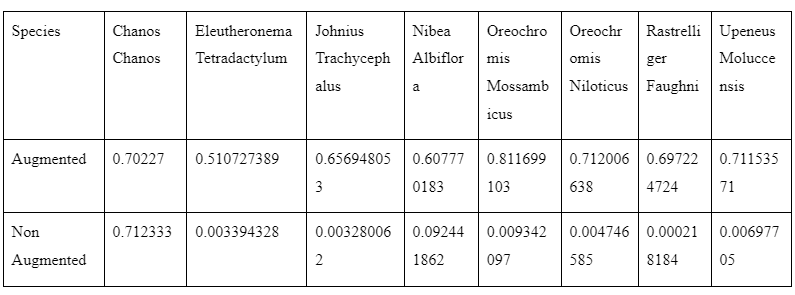Third Objective: Compare the accuracy of MobileNetV1 when the dataset is grouped according to fish species
Comparing the accuracy across the different fish species will help provide valuable insights on MobileNetV1 in classifying different fish species freshness through fish-eye images. The proponents will be comparing the accuracies from the augmented and non-augmented models from different fish species. The proponents will also be comparing specific metrics such as precision, recall, and F1 score to provide a more nuanced understanding of the differences between the accuracies.
Chanos Chanos:
From the results of the augmented and not augmented, it can be determined that the augmented model is more efficient then the non-augmented. A low recall of 0.63 means that the non-augmented model is failing to identify actual positive cases. On the other hand, the augmented model performs better in all metrics. A summary of the metrics for both augmented and non-augmented can be seen on the table below.
Chanos Chanos Summary of Metrics
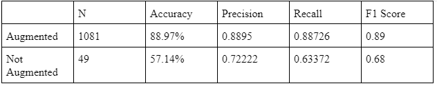Eleutheronema Tetradactylum:
Examining the results of the augmented and not augmented, the proponents have noticed a low precision and recall for the non-augmented model. This is most likely due to the low amount of sample images. A model with a low precision and recall will have difficulties classifying the freshness of fish through fish eye images. With this results it is determined that the augmented model is more viable to classify fish freshness through fish-eye images. A summary of the metrics is shown on the table below.
Eleutheronema Tetradactylum Summary of Metrics
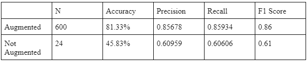Johnius Trachycephalus:
From what the proponents have garnered from the results of the augmented and non augmented, it can be determined that the augmented model is more viable then the non-augmented in classifying freshness of fish eyes through fish-eye images. The non-augmented model having both low precision and recall will have challenges when classifying fish freshness through fish-eye images. A summary of the metrics is shown on the table below.
Johnius Trachycephalus Summary of Metrics
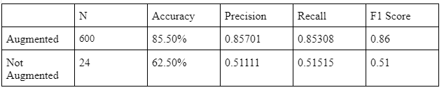Nibea Albiflora:
When comparing the outcomes of the augmented and non-augmented models, the proponents discovered that the non-augmented model had a low precision and recall. This is most likely due to a small number of example photos. A model with low precision and recall will have difficulty assessing the freshness of fish using fish eye images. With these findings, it is decided that the enhanced model is more viable for classifying fish freshness using fish-eye photos. A summary of the metrics is shown on the table below.
Nibea Albiflora Summary of Metrics
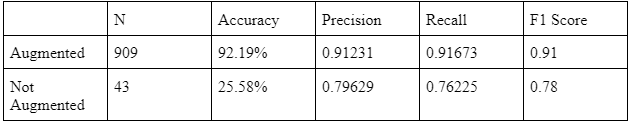Oreochromis Mossambicus:
Based on the findings of the augmented and non-augmented models, the proponents concluded that the augmented model is more viable than the non-augmented in identifying the freshness of fish eyes using fish-eye photos. The non-augmented model would struggle to classify fish freshness using fish-eye images since it has low precision and recall. A summary of the metrics is shown on the table below.
Oreochromis Mossambicus Summary of Metrics
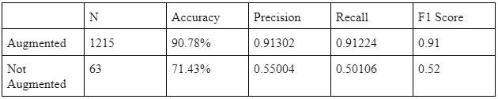Oreochromis Niloticus:
Examining the results of the augmented and not augmented, the proponents have noticed a low precision and recall for the non-augmented model. This is most likely due to the low amount of sample images. A model with a low precision and recall will have difficulties classifying the freshness of fish through fish eye images. With this results it is determined that the augmented model is more viable to classify fish freshness through fish-eye images. A summary of the metrics is shown on the table below.
Oreochromis Niloticus Summary of Metrics
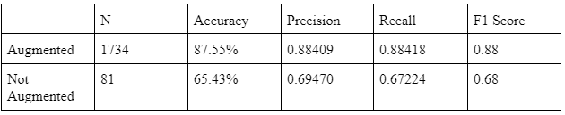Rastrelliger Faughni:
Based on the results of the augmented and non-augmented models, the proponents concluded that the augmented model is more practical than the non-augmented in determining the freshness of fish eyes using fish-eye photographs. The non-augmented model would fail to classify fish freshness using fish-eye images due to its low precision and recall. A summary of the metrics is shown on the table below.
Rastrelliger Faughni Summary of Metrics
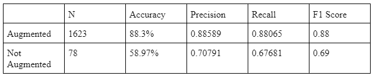Upeneus Moluccensis:
By comparing the outcomes of the augmented and non-augmented models, the proponents discovered that the non-augmented model had a low precision and recall. This is probably due to an insufficient amount of images. A model with low precision and recall will have difficulty assessing the freshness of fish using fish eye images. With these findings, it is decided that the enhanced model is more viable for classifying fish freshness using fish-eye photos. A summary of the metrics is shown on the table below.
Upeneus Moluccensis Summary of Metrics
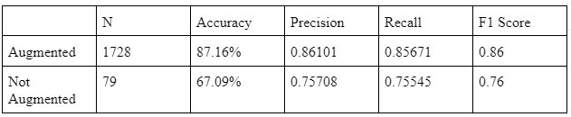